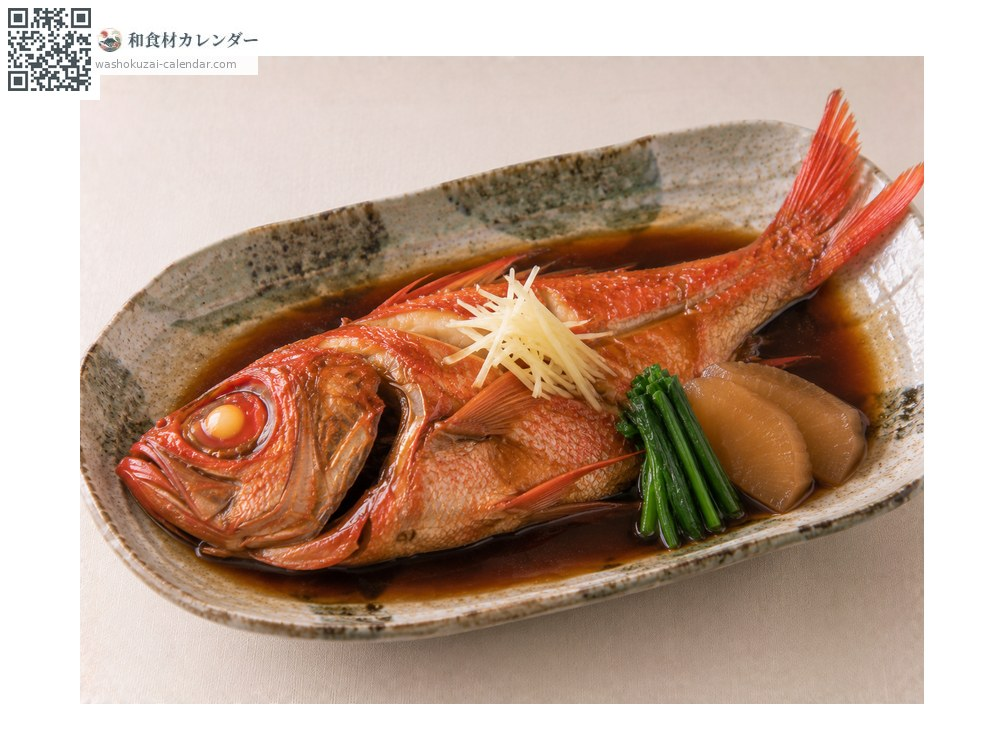
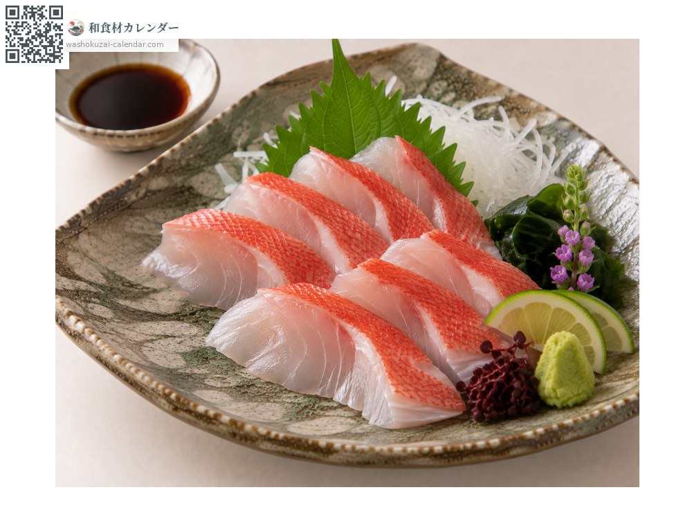
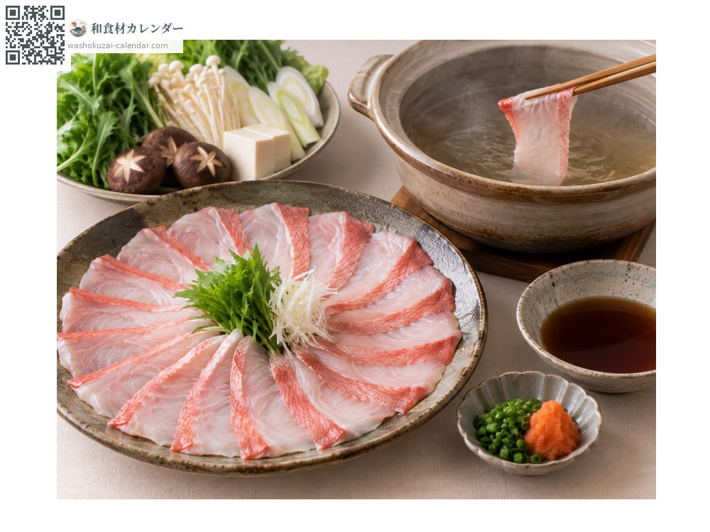
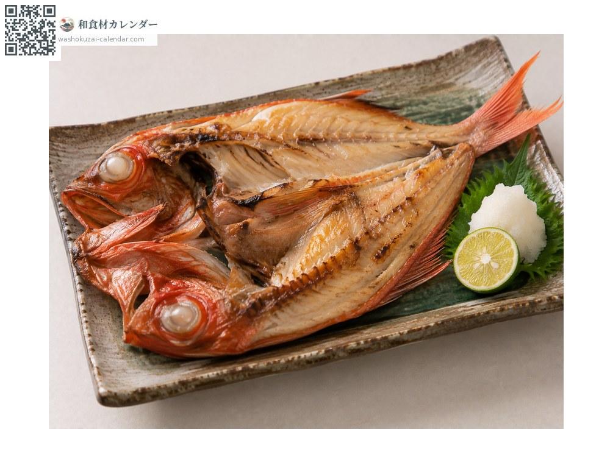

Seafood
Splendid alfonsino
キンメダイ きんめだい kinmedai
Also known askinmedai, kinme
At its best in Jan, Feb, Dec

When it is at its best
Jan
Feb
Mar
Apr
May
Jun
Jul
Aug
Sep
Oct
Nov
Dec
In seasonAvailable
How to cook

Nitsuke (simmered in sweet soy)
The classic. Simmered in sweet soy until the flesh flakes.

Sashimi
Rich with fat and noticeably sweet.

Shabu-shabu
Thin slices swished briefly in hot broth.

Himono (dried and grilled)
Dried overnight and grilled.
How to choose
A vivid orange-red body, large clear eyes and intact scales.
Storage
Gut and refrigerate; keeps two to three days.
Main areas
Good to know
Shimoda in Shizuoka and Choshi in Chiba are the main ports. It lives at 200 to 800 metres; the large eyes are an adaptation to the dark.